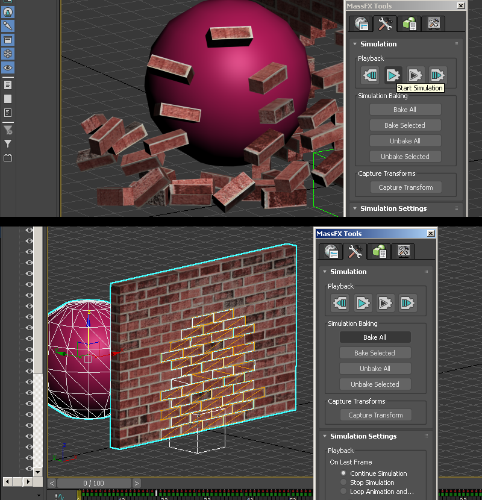

Baked Physics Method

Baked Physics in 3DSMax with "MassFX"
1) Have a collection of meshes ready for your scene. In my case I have a brickwall cutout and a bunch of bricks that fit in the space of this cutout. First thing to do is create a "Dummy" helper and move it to 0 0 0 in your scene. This will be your root anchor for your model which helps keep the export together and helps if you need more than one SMD export.
2) With all the bricks and outer brickwall mesh selected, click the link tool and parent all of these to the Dummy object. For this simulation I want these bricks to be blown out and for that im using a big sphere object to do that but will only be used for the simulation and not the final model. You can also use forces and other methods to do this, but I found this a very fast and effective method.
3) Open up your MassFX toolbox by clicking the world button in the MassFX toolbar. (If you don't see this in max go to Customize menu then "Show UI..." and try "Floating Toolbars")
4) First make sure "Use Ground Collisions" is enabled so you have an automatic ground for your scene (or else everything will fall through the world). Then change "Directional Gravity" to at least -700 since the default is usually too low gravity looking.
5) Go to the MassFX toobar and click and hold the sphere icon and then set the outer wall selected to "Static Rigid Body". This means the wall will act as an immovable but object that other objects can collide with. Then selecting the "Massfx Rigid body" of the object in the modifer stack, change the "Physical Shape" collision mesh option "shape type" to "Original". The default "Convex" will make the wall a solid piece but we need the hole so we go with original mesh. You can also use "convex" but that requires some tweaking.
6) Select all your loose brick obects and set them as "Dynamic Rigid Body". This means that the object is a free moving similated object.
7) Select your sphere object and set it to "Kinematic Rigid Body". This means the object can interact with Dynamic objects but is moved by keyframes. Kinematic objects also can pass through Static objects. This will mean we will animate this to push the bricks out of the wall.
8) Change your collider mesh shape to "Sphere". Then in your timeline make a quick movement animation. I turned on "Auto Key" and moved the sphere forward through the wall at frame 18. Once keyframes were set I turned off Autokey.
9) Now in order to set multiple objects settings at once, we use the MassFX window Green "Multi-object editor" tab. With all the bricks selected we set a "Physical Material" preset or custom depending on your needs. Also an important option is "Start in sleep mode". This keeps the bricks from moving before its struck, and is useful for when objects are touching eachother at the beginning of a simulation so they dont accidently jitter or explode outward due to an overlapping mesh. Set the mesh type to "Box" since bricks are simple box shapes.
9) When all is good press the "Start Simulation" button. Depending on how complex and how your computer specs are this may lag or go slow. If the scene is not to your liking press the button to the left to reset and then go back and make any changes. If your timeline does not accomodate the whole simulation lenght open the "time configuration" tab and increase the length/framecount of the scene.
If your physics simulation has very jittery or innacurate movements, you can attempt to change the "Solver Substeps" from 3 to 4. Also if you have some objects that dont collide right at high speed or clip you can try checking "Enable High Speed Collisions". More info on MassFX found on the 3ds help site.
When you are satisfied with the result, save a copy of your scene first and then press "Bake All". With all frames baked you can now export to SMDs. You can delete the pink collision ball as it is no longer needed.

10) Export page on 3ds info here if you need a refresher. Scrub to first frame and export a reference SMD, and then export a sequence SMD.
Before exporting, if your animation is longer than 100 frames I suggest you use the "Time Configuration" to change the FPS so less frames are needed. This is because there is an error that can happen with complex animations called "sequence "action" is greater than 64K". The less frames has to be put in to match the QC as well. You can start with say 25, then 20, then 15. Depending on your animation sometimes having less frames gives a slightly more smooth motion due to more interpolating. Anything below 12 noticibly loses precision.
You can continue to compiling and map setup below, but I will also beyond this show a map-collision method as well:
Continue to Compiling and Map setup
Map collision method
Now if you want your physics simulation to collide directly with your map geometry you absolutley can, this just requires a few additional steps.
1)Obtain "Crafty" which is a useful GoldSrc multi-tool which includes a BSP viewer that allows for BSP to OBJ. Make a copy of your map and isolate the area where your physics animation will be. Note that you will have to make sure your map compiles (no leaks). Compile your map to a BSP and you can omit "Run VIS" & "Run LIGHT" since we are just needing geometry, also check "do not run map on compile".
2)When the map is successfuly compiled open up the BSP with Crafty. With crafty BSP viewer open, go to file Export>OBJ.

3)Import the OBJ into 3dsmax with "Flip ZY axis" unchecked and "import materials" unchecked. When the obj is imported, select the outer faces and then press "hide"
4)Now with the inside of your OBJ revealed, set it as "Static Rigid Body" and in the MassFX toolbar uncheck "Use ground collisions". We uncheck this because if it was still enabled anything below the grid would be a "ground" and the hole in the OBJ that is below the grid would be collision covered over.
Use the same settings as before and be sure your "Physical Shape" collision mesh option "shape type" is set to "Original".
5)For this scene I made a stack of tire objects and set it up in the similar way as before where I parent them to a root bone which will be the origin then turn the tires into dynamic rigid bodies. I am using a kinematic ball to smash the tires in a similar way to the brickscene.
A thing to note about large physics sims like this is that GoldSrc models are lit from their origin point which means they may be affected by pointing a flashlight on that spot. In this demonstration I have it on the ground at 0 0 0 but you can put it on another ground or platform elsewhere. Also if you have difficulty moving the origin point without drastically changing the lighting of the model you can use zhlt_copylight x. "x" being name of target to copy light from. More info here.
6) Bake your keyframes as before with the same methods as the brickscene; Scrub to first frame and export a reference SMD, and then export a sequence SMD. As mentioned before with the "Time Configuration", I had to use that in this scene since I had well over 250 frames for final simulation so I went with 20fps before exporting to sequence smd.